Org-mode Community People
Ian Barton
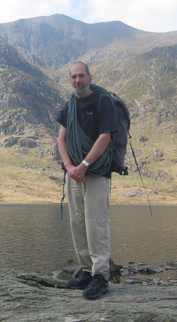
I started out in a farming family before going into medical research as a virologist and then into computing. I have now returned to farming, where I hope I’ll stay!
I have only been using Emacs for two or three years and had been looking for something that allowed me to keep all my information in plain text. When I discovered org I knew that I had found the Holy Grail.
Org develops so rapidly that every time I wonder if I can do “x” in org, it’s either already implemented, or one of Carsten’s multiple beings creates it overnight. However, despite rapid development and many features org’s core functions remain simple to use.
Outside farming and playing with computers I try to indulge my passion for mountaineering, which I am trying to pass on to my three young children, who are sometimes reluctant companions in our adventures!
Charles Cave
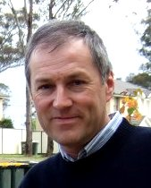
I started using Emacs on Unix workstations in the early 1990s but now I use Windows desktop machines.
I was using XEmacs for my Perl programming work in my role of a software tester for a Sydney based software company. Around 2007 I discovered David Allen’s Getting Things Done methodology through web sites such as http://www.43folders.com and http://www.diyplanner.com/. I later created a portal of GTD resources http://gtdportal.pbworks.com/
I stumbled upon the Planner mode for emacs, then did more research on Emacs outliners and found org-mode. What attracted me to org-mode was keeping all information in one file and the outlining commands were so simple. The format of an org-mode was very logical and easy to generate and parse using scripts in Perl or Python.
XEmacs soon gave way to GNU Emacs which is friendlier to org-mode and in my opinion, a better Emacs. My other useful Emacs package is mup-mode for typesetting music using the MUP program. I also use org-mode to publish articles for the web about GTD, org-mode and my music making.
org-mode and Remember mode are another great combination of tools. I capture my thoughts, ideas, notes, journal entries, and Internet banking receipts into plain text files.
I want to tell the world about org-mode so I write articles on how I have used org-mode in my daily life. I work as a technical writer of training materials, and I naturally enjoy writing to help people understand how to use technology. My articles can be found at http://members.optusnet.com.au/~charles57/GTD/ I couldn’t live without org-mode! Each new release has exciting new features.
Dan Davison
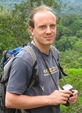
I’m a university-based researcher in evolutionary biology/genetics. In addition to using org-mode for all my task and project management, I now use it as my working environment for programming and data analysis, which I can highly recommend.
Although I’d used emacs for a few years beforehand, encountering org-mode finally motivated me to learn emacs-lisp, which I have really appreciated (I had previously found it strangely refractory). The community of org users is providing a constant stream of high quality new additions, and when you have any doubts about how to proceed yourself, it is a spectacularly helpful and reliable source of knowledge.
I helped Eric Schulte to produce the new source code functionality of org-mode (originally called org-babel). I have one other software project outside my work; its aim is to use the large amounts of information about musical similarity available online to organise and navigate a personal music library.
Carsten Dominik
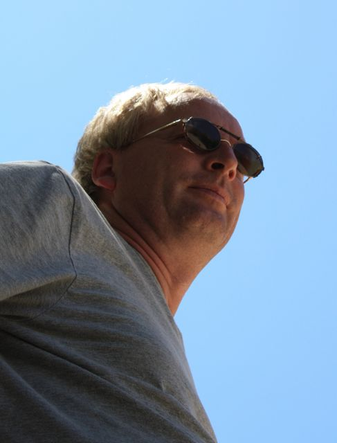
I am the main Org-mode author, being on this project since 2003.
Just like my earlier Emacs hacks RefTeX, CDLaTeX, and IDLWave, writing Org-mode resulted from a direct need for it: I wanted to get organized and wanted to do it in Emacs. There was nothing available that fit my wishes, in particular no combination of outline-based note-taking with task management in a single system.
With lots of help from the community around Org-mode, this project has grown into a versatile toolbox, which is being used by a large number of people, in various ways and to various ends.
Org-mode was largely written on the commuter train to Amsterdam, where I work as an Astronomer at the Astronomical Institute of the University of Amsterdam.
Thomas S Dye
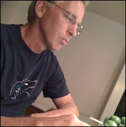
I am an archaeologist (http://www.tsdye.com/) who switched to Linux almost 20 years ago when the demise of DOS made most of my little Turbo Pascal utilities obsolete. My unhappiness with proprietary standards led me to discover the Free Software Foundation and, of course, emacs, which has been central to my computing life ever since.
With no formal computer science training, I typically stumble across cool emacs features by accident rather than design. Sometimes these features change the way I conceptualize a problem and the space of possible solutions. A short list, roughly in the order I discovered them, includes regular expression search and replace; emacs as an interface for other applications, like python and R; reftex (written by Carsten), whose manual suggests generating an index by creating a list of unique words over a certain size found in a document, then letting reftex guide the markup process, one unique word at a time (!); and, most recently, org-babel, which seems equal parts simplicity and magic.
I’m currently producing reproducible research documents with org-mode. I use org-mode to organize the research (thanks to Bernt Hansen’s terrific how-to), keep a laboratory notebook, build a source code library, create web pages, and author the published document.
Eric S. Fraga
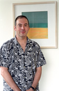
I am a computer scientist working with chemical engineers, doing research in optimisation and automated design methods. Org-mode is a key tool in the management of both my research programme and my teaching activities.
Being based on simple text files and being open source, Org-mode is attractive for being future-proof. It allows me to no longer worry about whether I’m locked in to some software vendor’s changing view of what is important or necessary and I know that all the information I have put into my org files is and always will be accessible.
Org-mode provides me with an excellent framework for collaborative work. As it is available on a very wide range of devices, including hand-held computers, the full power of the system is at hand no matter where I am working.
My web pages, describing my research activities and interests, are all written in Org. Lately, I have been experimenting with literate programming using Org with the recently added org-babel framework!
My contribution to the Org-mode project is mostly as an enthusiastic user!
Peter Frings
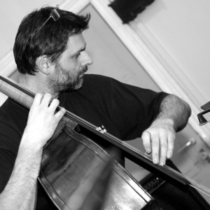
I’m part of a software team in Mortsel, Belgium, as a requirement analyst, conceptual designer, interaction designer, graphic designer and spec writer —or whatever the titles are—; i.e., the whole shebang except programming. I do miss programming a bit, which I did professionally during the first 10 years of my career. That itch sparked my current interest in functional programming, but I lack the time to do anything serious with it.
Although I’m not an artist, I like photography (’grepe’ on Flickr), and I play the double bass in a couple of folk bands.
Being an avid emacs user, I stumbled upon Org-mode and never looked back. I use it mainly to start writing ideas and concepts, to-do list and scheduler and to track the time I spend on the various tasks. I’m pretty sure I’m only using 5% of what it can do, especially given the furious pace of development in the last year. Nothing compares to the Org community, with Carsten et all on top (how can people fix a bug faster than you can read the problem report?).
I <3 Org-mode. Spread the word!
Bastien Guerry
Over the past decade, I have been studying philosophy, cognitive sciences and educational theories. I’m interested on how to use computers for education, and I’m a consultant in this field.
I’m not a programmer but I’ve been raised in Emacs, so I can read some elisp code, fix some bugs and sometimes write a function.
My first Emacs contribution was BHL, a mode to convert plain text to HTML, LaTeX, etc. When I discovered Org I thought: “Wow. This is the perfect tool for playing with ideas I’m too lazy to implement in BHL.” And it turned out to be much more than that: Org has been a matrix for many new ideas that I couldn’t have dreamt for with BHL.
Org is to Emacs what Emacs is to computers.
And nothing compares to the Org community.
Bernt Hansen
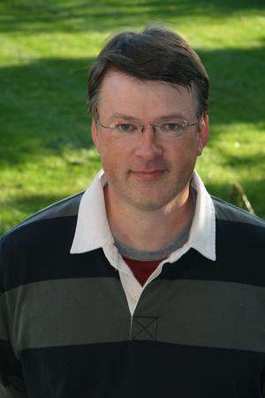
I am a freelance software designer working from my office near Toronto, Ontario, Canada. I use Org-mode to track all of my personal and business tasks.
Org-mode was the end of my long quest to find a better organizational toolkit. I had tried many other systems over the years in an attempt to get organized.
I started using Org-mode in August 2006 after trying out planner for a year. I needed something to track time spent on tasks and a note filing system where I could actually find the notes back again and in a reasonable amount of time. Being able to actually read the note was an added bonus – my handwriting is awful - especially when I’m in a hurry such as making notes during a client conversation. Fortunately for me I can type faster than I can write.
Since then Org-mode has continued to evolve and it has many more features than I will ever need from my organizational software suite. I’m no longer searching for a better organizational toolkit.
Wes Hardaker
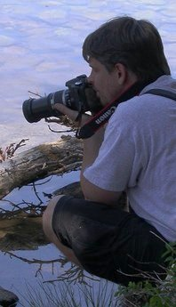
I like to bite off more than I can chew on a regular basis. I’m actively involved in a ton of things. I’m an avid Photographer, a Amateur Radio enthusiast, and Community Emergency Response Team supporter. I love hiking (making maps of everywhere I go) and enjoy finding Geocaches. All of this takes coordination, organization and careful tracking of the things that I have yet to accomplish. I think faster than my fingers can frequently write down my ideas and thoughts.
Org-mode has certainly made managing my overwhelming list of things I need to do, want to do or simply thinking of much easier. I don’t feel nearly as lost since I’ve started using it.
I participate in a large number of open source projects (both for work and pleasure) and have contributed at least at least a little bit to org via my org-export-generic functionality.
Thanks a bunch to Carsten and everyone else for writing such a wonderful package!
Manuel Hermenegildo
I am a researcher (and the director of) a research institute and a university research group, both in Computer Science. Org has had a huge positive impact in the way I organize my (unfortunately many) tasks –and in fact my life as a whole. It is also used by many people in the institute and the research groups I am part of. Here is how:
We participate in a large number of projects, from research projects to taskforces regarding many organizational aspects of our institute, and we make extensive and collaborative use of org to get organized within them. We used shared org files, essentially one per project, to gather our notes, tasks, deadlines, etc. for that project. These files are kept in a server and we edit them collaboratively using svn or git. People include as their org-agenda-files only the org files of the projects they are involved in. We use tags to assign tasks to people (e.g., my tag is :MH:). We also have of course private org files, where we use FILETAGS to assign all the tasks in the files to the owner of the file. Then, we use tag filters to generate agendas and TODO lists that only have our tasks. This is far simpler and more flexible than any of the other methods of getting organized that we have seen so far! And it is all in simple ASCII files and through emacs… happiness.
I have also contributed a bit to org development, mainly some aspects that help support the model described above, some issues related to the generation of web pages, and minor things here and there.
I cannot say as others that org is the main reason I use emacs: in fact, it is scary to think about when I started using emacs (1983?). But org has done something truly amazing: make emacs even more useful (and very much so!) than it already was for me. Try it for yourself –you will not be disappointed!
Tassilo Horn
I started using Emacs about the same time I’ve switched to GNU/Linux around 1999. When people are saying they switched to Emacs because of org-mode, for me it was the Gnus newsreader, which I’m still using today.
Over the time, I’ve learned elisp and gotten my hands dirty in several projects, like EMMS, Gnus, and Circe. And I’m the author of doc-view, which is integrated in Emacs 23. In org-mode, I’m in charge of the linking stuff between Org and Gnus.
Org has become the most important part of my workflow: if I didn’t org-capture it, it won’t be done!
In my free time, I’m trying to do as much crazy stuff as possible: parachuting, hang gliding, rock climbing, snowboarding, and cooking! Believe me, the last thing’s the most dangerous.
On my day job, I’m a researcher at the Institute for Software Technology at the University Koblenz-Landau, where my main interests are MDA and especially model transformations.
You can find me as tsdh on IRC in #emacs, #gnus, and #org-mode.
Andrew Hyatt
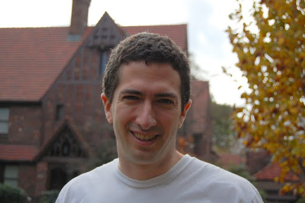
During my first year of college, I was introduced to emacs, and I’ve been increasing my usage of it ever since. I use it to read mail, chat, code in C++, Java, and Python, and of course organize my work with org-mode.
Previous to org-mode, I tried out many different GTD-style systems, but found them all annoyingly inflexible or inefficient. Now I use org-mode to plan out my tasks in my own quasi-GTD system, show me what there is to work on, take notes while I’m working on tasks, and time how long I spend working on tasks. My contributions to org are the org-screen module (for linking to screen sessions), and schedule-based tracking in org-depend. I have some ideas for further contributions that will have to wait until my next long flight (which is when I tend to do all my org-mode hacking).
Right now, I’m spending most of my emacs hacking time working to integrate emacs with Google Wave
I’ve been working as a software engineer since 1997, both around Silicon Valley and currently in New York City. Besides work, I hang out with my family, eat out at interesting restaurants, try and perfect my pizza-making and cappuccino-making skills, exercise, and read interesting books. For current activities, see http://twitter.com/andrewhyatt.
Shidai Liu (Leo)
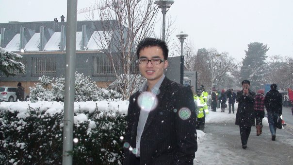
Planner got me started on Emacs in late 2005 after seeing some of it’s
cool features. One year later (October 2006) I moved to Org,
realising how much more powerful it was, plus the vibrant community it
has. From then on Org has been the focal point of my pure emacs-based
personal information manager (Org, Gnus, BBDB, Calendar, Diary, etc.).
Here is a list of things I use Emacs for:
| TASKS | EMACS SOLUTION |
|---|---|
| Email/News | Gnus |
| Version control systems | Magit + VC |
| Calculator | Calc |
| Shell | EShell |
| Task/time management | Org |
| Common lisp development | SLIME |
| LaTeX/TeX authoring | AUCTeX |
| Notes taking | Org + AUCTeX |
| Blogging | Gnus |
| Addressbook | BBDB |
| Calendar | Calendar |
| Bibliography database | BibTeX |
| Spell checker | Ispell + Flyspell |
| IRC | Rcirc |
| File manager | Dired |
| Playing music | EMMS |
| Inputting Chinese | Eim |
| Dictionary | Dictem |
| …… | …… |
I am currently living and studying in Cambridge UK. I enjoy my experience here and value the opportunities it gives me. Post my study I’d like to take a break travelling while reflecting on what I should focus in the future. But whatever I do I will use Emacs + Org!
Pete Phillips
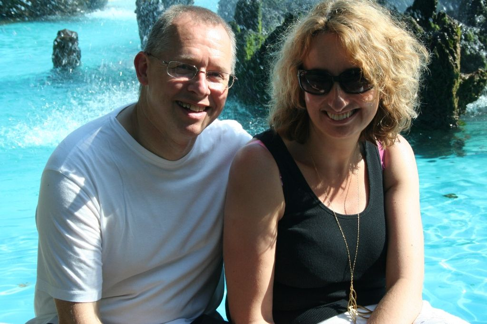
(I’m the one on the left btw.)
I started using org-mode in Aug 2005. Before that I had used 3 different models of Psion organisers (II/II XP, Psion 3a, Psion 5mx), and a Sharp Zaurus) to organise my lists/things to do. Analog-wise, I also used a DayRunner for about 8-10 years as well as a HPDA.
In Summer/Autumn 2005 I did a blog post about moving to org-mode after trying out planner mode from Sacha Chua. During my initial period it became clear that I needed some method of dealing with Contexts. I tried various ways of using the TODO keywords with some success, but eventually Carsten solved the problem by adding the TAGS functionality. I tried this out for a few days and on 19th Dec 2005 I emailed Carsten:
On Dec 19, 2005, at 1:53 PM, Pete Phillips wrote: Hi Carsten. Just one word - Awesome!
… the combination of TODO keywords to record the status of the item/action (Waiting, Next, Done etc) plus the use of tags to record the context (:Home: :Laptop: :Jim: etc) was the ’Aha!’ moment which made org-mode the answer to my needs.
I have org-mode up in emacs 24 hours a day, in a frame next to my mh-e buffer. I organise just about everything with these two emacs tools. Whilst I use firefox/chrome for web browsing, my mail reading, list making and diary/calendar management are all done through emacs. I have some blog posts about GTD and org-mode which may be interesting to some.
I manage a UK NHS testing lab (yes - new website on the way, honestly), with a team of scientists providing pharmaceutical QA and medical device testing services to the Welsh NHS. Whilst I used to be very active on the org-mode mailing list, my workload these days doesn’t allow me that luxury. However, org-mode is more important to me now than ever - basically I manage my life with it - work and home. In my spare time I play jazz, and even use org-mode to keep lists of numbers I would like to try out, contacts for jazz venues, lists of forthcoming gigs etc.
A big thank you to Carsten for this superb tool.
Giovanni Ridolfi
I started using Emacs just to use Org-mode. Then Emacs began to be my second operating system; the first is Debian GNU/Linux, and the last is Windows XP (bleah!).
I am a chemist, working in Bologna, Italy. When I am not in the laboratory, I am at the computer writing and reading reports and also the Org-mode mailing list. I pay particular attention to the posts concerning Windows.
I am also active in my LUG: Emilia-Romagna LUG, since I think that when spreading free software the more the merrier.
I love reading. The books I have just finished are Q and L’inattesa piega degli eventi.
T.V. Raman
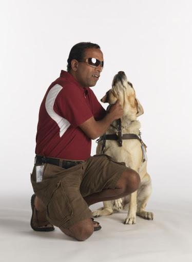
I am a Computer Scientist with over 11 years of industry experience in advanced technology development. During this time, I have authored 3 books and filed over 25 patents; my work on auditory interfaces was profied in the September 1996 issue of Scientific American. I have leading edge expertise in Web standards, auditory interfaces and scripting languages. I participate in numerous W3C working groups and authored Aural CSS (ACSS); in 1996 I wrote the first ACSS implementation. I have led the definition of XML specifications for the next generation WWW including XForms, XML Events, and Compound Document Formats such as X+V.
T.V. Raman is blind and uses Emacs for much of his interaction with his computer system, because he has taught Emacs to speak. I (Carsten) have seen him using his system, and it is amazing. You can see him introducing Carsten Dominik during his Google Tech Talk. The picture shows him with his dog Bubbles.
Andreas Roehler
Studying economics in former GDR until 1975, my diploma thesis has been rejected as I proposed a cure employing free speech, free press, independent unions etc.
Turned towards literature later, wrote plays, prose and poetry. Former Bertolt Brecht Theater Berliner Ensemble staged 1993 my adaption of Aischylos “The Persians”.
Crossed the Berlin Wall in 1984 and proceeded - next turn of life came with lecture of a book by french sociologist Serge Thion: Historical Truth or Political Truth.
Translated the book with the help of friend and finally, as no one would do it in Germany, published it in 1994. A lot of things stirred up, we started a journal too. Refusing the common power play we invited people with quite different ideas, religions etc., published articles from right-wing settlers as from muslim activists, published Norman Podhoretz and Noam Chomsky likewise.
Things got hot, service took action, the computers and all the equipment being seized again and again; seizures, which have been forbidden by german press law beside.
Detected GNU Linux at this occasion - not to pay licenses repeatedly. Detected Emacs - free software is a kind of free speech.
Eric Schulte
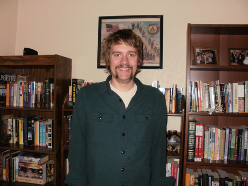
After a liberal arts education in Mathematics and Philosophy – my studies having deliberately excluded the applicable and computational sciences – I left school and spent the next 5 years working in the research and development of computational tools. I have now come full circle and am pursuing my graduate studies in computer science at the University of New Mexico.
In 2006 I began using Emacs and roughly a year later started using Org-mode. Initially I used Org-mode solely for note taking. It has since turned into both my research laboratory and my main document authoring tool.
I’ve had the pleasure of working on a couple of Org-mode related projects – org-plot, org-exp-blocks, blorgit and org-babel. Writing emacs-lisp in Emacs is a pleasure which is greatly amplified by the thoughtful construction of Org-mode. Its readable design, and numerous strategically placed hooks and control variables make it the most hackable framework I have ever encountered.
Through Emacs I realized the benefits of a truly customizable environment, and as a result Emacs took over my OS; now Org-mode has blurred the lines between customization and development and it is preceding to take over my Emacs.
Manish Sharma
I had tried dozens of task management tools of various kinds (web-based, browser-based, wiki-style, MS Excel-based, paper-based, MS Outlook-based, plain text file based, Post-It based… you get the idea) between 2003 and 2007. I really tried to like them… but something or the other was always amiss. Planner was the first system that I kept going back to after trying every fancy new system; I kept looking around until I found Org-mode around August 2007 and that was the end of my journey. It was like finding out who you are going to spend the rest of your life with. :)
I initially thought Org was awesome and could not be improved further but I had underestimated Carsten, various contributors and the amazing community of users who keep pushing the envelope of what is possible without sacrificing the deceptive simplicity of the system.
It morphs into the perfect system to suit any new-fangled ideas I might have about organizing and approaching work. To me, Org is like a DIY-kit of organizers – it scales as you grow and discover and tune how you would like to organize your life. I doubt if I will ever need or use full power of Org.
David O’Toole
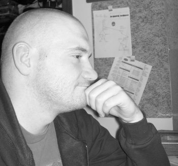
David O’Toole is a Lisp programmer living in Massachusetts, USA. Interests include GNU Emacs, Ubuntu, and independent games development.
His website is http://dto.github.com/notebook
Karl Voit
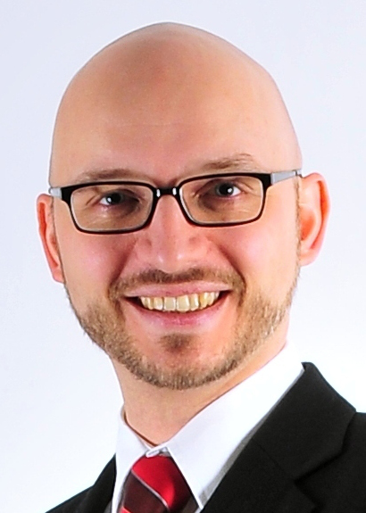
I started with Emacs in the 90s for composing emails, editing files, writing LaTeX. Approximately 2004 I switched to vim because of performance advantage and I was doing a project in an old AIX UNIX environment where there was no Emacs or even vim: I actually had to learn vi.
While switching from Emacs to vi(m) I created The vim/emacs cheatsheet of freezing hell covering both worlds.
At Grazer Linuxdays 2011, I attended a great “show and tell” where someone presented Org-mode and its features related to outlining and generating LaTeX beamer presentations. My mouth stayed open until that day :-)
I was on the holy quest for the perfect Personal Information Management (PIM) tool for almost decades: primitive Windows and GNU/Linux software tools of the 90s, PalmOS (Handspring Deluxe, T3), J-Pilot, Sharp Zaurus, Outlook, Desktop-Wikis like Zim or Personal Brain, FreeMind, and many more. Some of them I used pretty intense, some of them I tested only a short period of time.
From 2009–2012 I was writing my PhD thesis in the field of PIM and Information Architecture. You probably have heard of tagstore which is a research software from my project. Some basic ideas of my PhD thesis are that the desktop metaphor (e.g., file system hierarchy) should be replaced by more advanced technology. And the re-presentation of information should not depend on the storage method/process but rather on the re-find/retrieval method/process alone. Tagging seems very promising to me.
I am also interested in having something that represents the old idea of a Memex which visualizes much of my data in a useful way. Therefore I started an extension of Org-mode which is called Memacs. Please visit the project page when you want something easy that integrates lots of different data sources such as SMS, emails, bookmarks, tweets, and many more into your Org-mode agenda.
When I adopted org-contacts, I faced the problem that there is no common directory or taxonomy where common properties are listed. So I had to “invent” my own property style for my contacts. In January 2012, Sebastien Vauban also mentioned the need for a standard for properties. This is when I started to commit to Worg :-) I hope that I can add a small piece so that people do not have to re-invent the wheel all over again.
You can visit my github page where I host several projects (not only) related to Org-mode: Org-mode workshop, Reproducible Research with Org-mode, extract PDF annotations to Org, ACM template for Org-mode export, and much more. Follow me on Twitter. I also wrote my own Org-mode weblogging system called lazyblorg which I use to generate my blog.
Stefan Vollmar
I started using Emacs on large Unix systems when I was still a physics student, but I confess to have strayed from the Path in later years, as I had been disappointed with its lack of integration into the other platforms I needed to use for my work at the Max Planck Institute for Neurological Research Cologne.
This has changed with Aquamacs Emacs and newer versions of Emacs in general. Org-mode is a very (very) good reason on its own to re-consider Emacs - in my case, it was “love on first sight” with Org-mode’s conceptual beauty, even before I found out about the astonishing Org community and the torrent of continuous improvements.
Org-mode was instrumental for planning our Looking into Brains project, also for generating its HTML documentation. We have started to use Org-mode for the software documentation of my group’s platform-independent VHIST and VINCI projects and are working on an integration with their Qt-based frameworks.
Staff members of our instiute may have a personal page for CV-related information. We found that Org-mode works very well for this purpose when a suitable template is provided - instructions and all template files are online.
Carsten Dominik gave a guest talk at our institute about Organizing a Scientist’s Life and Work - very convincing.
My only remaining problem with Org-mode is to communicate properly my very own list of favorite features: it just takes too long to list them all…
Andrew Young
As of 2012, I am a 5th year Software Engineering and Management student at McMaster University (Hamilton Ontario, Canada).
I have been using org-mode since 2009, where I started using it to create class notes during my studies. I now use it for anything and everything I write, such as; code, planning, logging, brainstorming, webpages, and anything that could use a touch of organization.
I became involved with org-mode development and the community through Google Summer of Code during 2012, where I created a specialized merge driver.
I am really excited about org-mode, and can’t wait to see what the future brings.